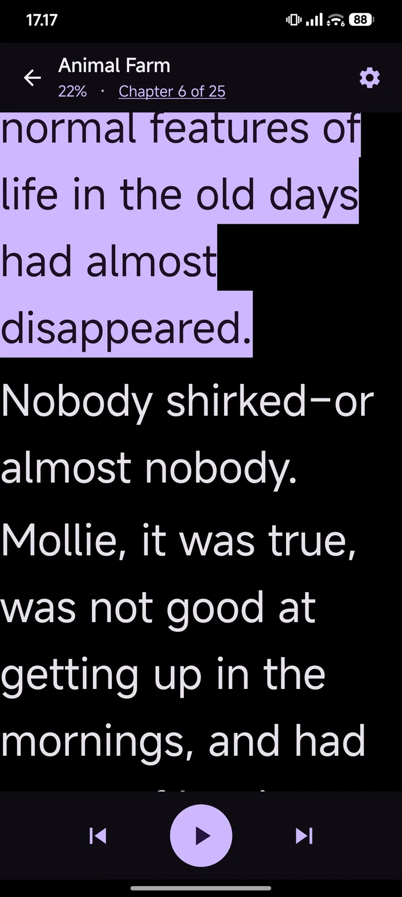
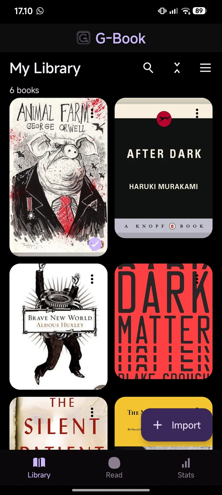
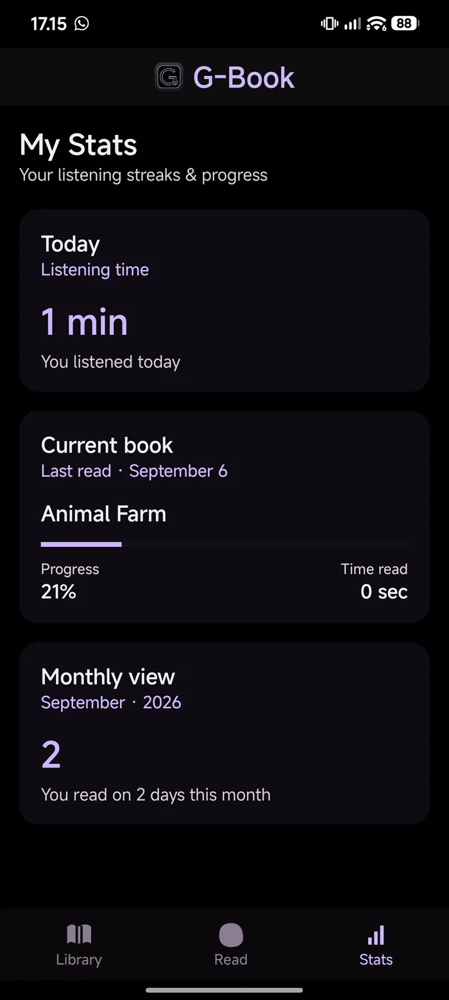
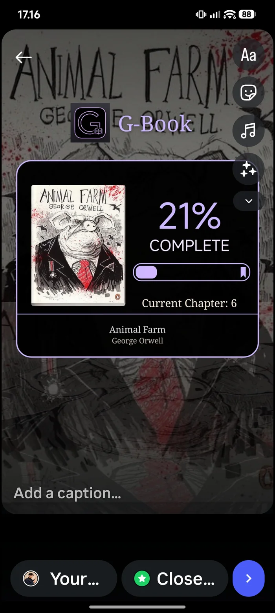

Reads aloud, properly
TTS runs in a foreground service with a media session, so playback survives screen-off and shows a notification with cover art, chapter, and previous / play / next-sentence controls.
G-Book was built for low vision, from the first line of code. Type you can size up to 44sp. Real text-to-speech with sentence-by-sentence highlighting. EPUB and PDF. No accounts, no ads, no network required to read.

“I have low vision, so I built the reader I actually needed. Then I kept rebuilding it every time something got in the way of the words.”Gerry, maker of G-Book
Not a feature list for a store page. These are the things that were fixed, one version at a time, because they got in the way of reading.
TTS runs in a foreground service with a media session, so playback survives screen-off and shows a notification with cover art, chapter, and previous / play / next-sentence controls.
The spoken sentence is lit in light purple and kept in view as the reader scrolls. You always know exactly where the voice is, and where you are.
16 to 44sp in fine steps, weight and line spacing in quarter increments, serif or sans, centred or justified, one to three blank lines between paragraphs.
An AMOLED-black surface by default: kind to light-sensitive eyes and to your battery, with an ink-on-paper high-contrast mode when you want the opposite.
EPUB 3 navigation documents and EPUB 2 NCX both parse, the OPF spine decides reading order, chapter anchors are exact, and malformed files still open instead of failing.
Import a PDF and the text is extracted for reading and speaking, with the first page rendered as the cover so it looks like a book on your shelf.
Reader, library, stats, the notification, shared cards and CSV backups all read from the same progress model. Nothing disagrees about where you are.
Today’s actual spoken time, the current book with its chapter and percentage, and how many days this month you read. Backed up and restored as CSV.
Cover art is pulled out of the EPUB itself, or rendered from a PDF’s first page, with a fallback if there is none. Grid or list, recency sort, long-press to manage.
Real screenshots from v0.6.2, not mockups.



Low vision is not a settings toggle you add at the end. It shapes how the reader behaves: what is tappable, what is hidden, and how big the target is.
In full-screen reading, volume up and down step to the next and previous sentence instead of changing the device volume. No aiming at small buttons.
A tap hides the chrome so the page is just text. The controls come back the same way. Nothing is lost, nothing overlaps the words.
Text runs from 16sp to 44sp, weight and spacing in quarter steps. You can land on the size that is actually comfortable rather than the nearest one offered.
The reader keeps its own locked scale, so a large size does not push the layout into clipped lines and broken paragraphs. Big text still has to be good layout.
Close the app mid-chapter and it reopens on the sentence it left, scrolled into view, not at the top of the chapter asking you to find your place again.
Everything renders as real, scalable type. Nothing is a screenshot, so nothing blurs when you need it bigger.
A single-module Kotlin app with Jetpack Compose UI and unit tests around the parts that are easy to get wrong: navigation parsing, chapter progress, and backup format.
9ea237097ee7c039803adbb68ef9926b93ebef0191539c1dbe4ec60ca9ddf264
Signed with a private release key rather than a debug key, but still distributed outside an
app store, which is why Android shows the warning. Verify the SHA-256 above if you want
to be certain the file arrived intact. G-Book asks for no account and no internet permission
to read.
Upgrading from the earlier debug build? The signing key changed, so Android will refuse
to install over it. Back up your progress from Stats, uninstall the old copy, then install
this one and restore.
Each release fixed something specific that got in the way of reading.
Reader top bar reworked so Share and Settings are always fully visible; strict one-line ellipsis on book and chapter titles; a smooth bottom-origin slide-up when a book opens; motion timed to the highest supported refresh rate; Library is now the destination for every fresh launch.
Durable exact TTS resume, the restored sentence scrolled back into view, and unified motion and ripple polish across the app.
Reader settings reorganised into top tabs for Page and TTS; library detail typography now auto-sizes before it ellipsizes.
Page and TTS settings separated, quarter-step font weight and pitch controls, and a details sheet that adapts to locked font scale.
G-Book is one person's project, so mail comes straight to me. A book that would not open, a setting that does not stick, or something you wish it did: all of it is useful.